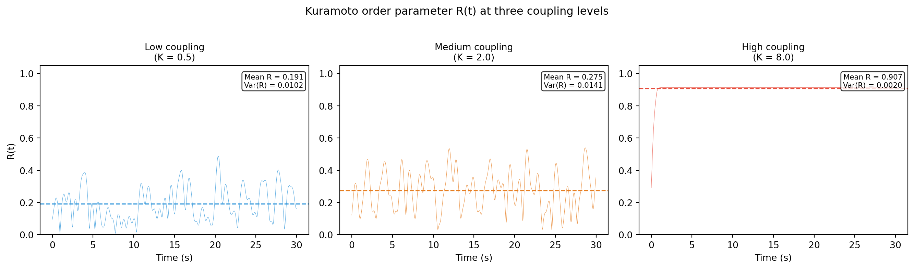

What the Kuramoto model is, the order parameter R(t) and its formula, interpreting R (0 = desynchronised, 1 = fully synchronised), temporal variability of R as a measure of metastability, and the relationship to the dominant eigenvector approach.
Published
31 March 2026
Modified
31 March 2026
Why this topic matters
When you have the instantaneous phase of multiple EEG channels, you might want a single number that tells you: how synchronised are these oscillators right now? The Kuramoto order parameter gives you exactly that. At each time point, it summarises the degree of phase alignment across all channels into a value between 0 and 1. Tracking this value over time reveals the dynamics of global synchronisation: is the brain locked into one coordination state, or is it constantly shifting?
The temporal variability of the order parameter is one way to quantify metastability. This connects the Kuramoto framework to the broader analysis of brain dynamics in health and disease, including the resting-state EEG analysis relevant to Parkinson’s disease research.
The Kuramoto model
The Kuramoto model (Kuramoto, 1975) is a mathematical model of coupled oscillators. Each oscillator has its own natural frequency, and the oscillators are connected to each other with some coupling strength. The model describes how the oscillators’ phases evolve over time:
where \(\theta_k\) is the phase of oscillator \(k\), \(\omega_k\) is its natural frequency, \(K\) is the coupling strength, and \(N\) is the number of oscillators.
The key insight of the Kuramoto model is that there is a critical coupling strength \(K_c\): below this threshold, the oscillators run independently; above it, they begin to synchronise. The transition from incoherence to partial synchronisation to full synchronisation is one of the most studied phenomena in nonlinear dynamics.
We do not use the Kuramoto model to simulate EEG data (the brain is far more complex than \(N\) identical oscillators). But the order parameter from this model is extremely useful as a descriptive measure of synchronisation in real neural data.
where \(\phi_k(t)\) is the instantaneous phase of channel \(k\) at time \(t\). The left-hand side is in polar form: \(R(t)\) is the magnitude (the order parameter itself) and \(\Psi(t)\) is the mean phase.
This is the magnitude of the average of \(N\) unit vectors on the complex plane, where each vector points in the direction of one channel’s phase.
Geometric interpretation
Imagine placing \(N\) dots on the unit circle, one for each channel’s phase. \(R(t)\) is the distance from the origin to the centroid of these dots:
If all dots cluster together (all phases are similar), the centroid is near the edge of the circle, and \(R \approx 1\). The oscillators are synchronised.
If the dots are spread uniformly around the circle (phases are random), the centroid is near the origin, and \(R \approx 0\). The oscillators are desynchronised.
If the dots form two clusters on opposite sides (half the oscillators in phase, half in anti-phase), the centroid is near the origin and \(R \approx 0\), even though there is structure in the phases.
This last point is important: \(R(t)\) measures global, in-phase synchronisation. It does not detect anti-phase or multi-cluster coordination. For those patterns, the dominant eigenvector approach or higher-order Kuramoto parameters are needed.
Interpreting \(R(t)\)
\(R\) value
Interpretation
\(\approx 0\)
Complete desynchronisation; phases are uniformly distributed
\(0.2 - 0.4\)
Weak partial synchronisation; some phase clustering
\(0.4 - 0.7\)
Moderate synchronisation; a clear dominant phase
\(0.7 - 1.0\)
Strong synchronisation; most channels in phase
\(= 1\)
Perfect synchronisation; all channels have the same phase
In resting-state EEG, \(R(t)\) typically fluctuates in the range of 0.2–0.6, reflecting partial and varying synchronisation. Values consistently above 0.8 would be unusual and might indicate an artefact or a pathological state (such as a seizure, where excessive synchronisation is a hallmark).
Temporal variability of \(R\) and metastability
A single average value of \(R\) tells you the mean level of synchronisation, but it misses the dynamics. A more informative quantity is how much \(R(t)\) fluctuates over time. This temporal variability is one definition of global metastability:
High \(\text{Var}(R)\): \(R\) swings between high and low values, meaning the system transitions between synchronised and desynchronised states. This is the hallmark of metastable dynamics.
Low \(\text{Var}(R)\): \(R\) stays near its mean value, meaning the system is locked in one state (either consistently synchronised or consistently desynchronised). This suggests rigid dynamics.
Zero \(\text{Var}(R)\): \(R\) is constant. Either all oscillators are perfectly synchronised (\(R = 1\), no variability) or perfectly independent and numerous enough that \(R\) stays at a fixed low value.
The Kuramoto-based global metastability is simple to compute and widely cited, but it has a limitation: it only captures global synchronisation fluctuations. If the brain reorganises its coordination pattern without changing the overall level of synchrony (e.g., frontal and parietal regions swap their roles), \(R(t)\) may not change, even though the coordination state is different. The dominant eigenvector approach captures these subtler rearrangements.
Relationship to the dominant eigenvector approach
The dominant eigenvector approach (described in the metastability topic page) and the Kuramoto order parameter are complementary:
Feature
Kuramoto \(R(t)\)
Dominant eigenvector
What it measures
Overall synchronisation level
Coordination pattern (who is in phase with whom)
Output
One value per time point
One vector per time point (\(N\) elements)
Metastability
\(\text{Var}(R)\): global
\(\text{Var}(v_k)\): regional (one per channel)
Sensitivity
Detects global sync changes
Detects pattern rearrangements
Anti-phase detection
No (anti-phase pairs cancel)
Yes (opposite signs in eigenvector)
In practice, both measures are useful. Kuramoto \(R(t)\) gives a quick overview of synchronisation dynamics. The dominant eigenvector gives a spatially detailed picture of which regions are flexible and which are rigid.
For EEG analysis, a typical workflow is:
Compute \(R(t)\) and \(\text{Var}(R)\) as a summary of global dynamics.
Compute regional metastability from the dominant eigenvector for a spatially resolved picture.
Compare both measures between groups or conditions.
Working example
The code below simulates a system of coupled oscillators, computes \(R(t)\), and shows how the order parameter reflects the level of synchronisation. We simulate three scenarios: low coupling (desynchronised), medium coupling (partially synchronised), and high coupling (strongly synchronised).
import numpy as npimport matplotlib.pyplot as pltrng = np.random.default_rng(42)# ── Parameters ──────────────────────────────────────────────N =20# number of oscillatorssfreq =256duration =30# secondsn_samples = sfreq * durationdt =1/ sfreqtimes = np.arange(n_samples) * dt# Natural frequencies: clustered around 10 Hz with some spreadnatural_freqs =10+ rng.normal(0, 0.5, N)# Three coupling scenarioscoupling_levels = {"Low coupling\n(K = 0.5)": 0.5,"Medium coupling\n(K = 2.0)": 2.0,"High coupling\n(K = 8.0)": 8.0,}results = {}for label, K in coupling_levels.items():# Simulate Kuramoto model with Euler integration phases = rng.uniform(0, 2* np.pi, N) R_series = np.zeros(n_samples)for t_idx inrange(n_samples):# Compute order parameter z = np.mean(np.exp(1j* phases)) R_series[t_idx] = np.abs(z)# Update phases (Kuramoto equation)for k inrange(N): coupling_term = (K / N) * np.sum( np.sin(phases - phases[k]) ) phases[k] += (2* np.pi * natural_freqs[k] + coupling_term ) * dt# Keep phases in [0, 2pi] phases = phases % (2* np.pi) results[label] = {"R": R_series,"mean_R": np.mean(R_series),"var_R": np.var(R_series), }# ── Plot ────────────────────────────────────────────────────fig, axes = plt.subplots(1, 3, figsize=(14, 4))colours = ["#3498db", "#e67e22", "#e74c3c"]for idx, (label, res) inenumerate(results.items()): ax = axes[idx] ax.plot(times, res["R"], linewidth=0.4, color=colours[idx], alpha=0.8) ax.axhline(res["mean_R"], color=colours[idx], linestyle="--", linewidth=1.2) ax.set_xlabel("Time (s)")if idx ==0: ax.set_ylabel("R(t)") ax.set_title(label, fontsize=10) ax.set_ylim(0, 1.05) ax.text(0.98, 0.95,f"Mean R = {res['mean_R']:.3f}\n"f"Var(R) = {res['var_R']:.4f}", transform=ax.transAxes, ha="right", va="top", fontsize=8, bbox=dict(boxstyle="round,pad=0.3", facecolor="white", alpha=0.8))plt.suptitle("Kuramoto order parameter R(t) at three coupling levels", fontsize=12, y=1.02)plt.tight_layout()plt.show()

Kuramoto order parameter R(t) for three coupling levels. Top: phase evolution on the unit circle at three snapshots. Bottom: R(t) over time. Low coupling (left) produces low R with small fluctuations. Medium coupling (centre) produces moderate R with large fluctuations, indicating metastable dynamics. High coupling (right) produces high R with small fluctuations.
Reading the results
Low coupling (left panel): the oscillators are mostly independent. \(R(t)\) stays low and fluctuates only slightly, because the phases are nearly uniformly distributed around the circle. The variance of \(R\) is small because there is nothing to change: the system is stuck in an incoherent state.
Medium coupling (centre panel): partial synchronisation. \(R(t)\) fluctuates between moderate and higher values as the oscillators repeatedly come into and fall out of alignment. The variance of \(R\) is largest here, indicating metastable dynamics. The system transitions between more and less synchronised states.
High coupling (right panel): the oscillators are locked together. \(R(t)\) stays high and barely fluctuates. The variance of \(R\) is small because the system is stuck in a synchronised state.
The medium-coupling regime, where \(\text{Var}(R)\) is maximal, corresponds to the metastable regime in brain dynamics theory. Healthy brains are thought to operate near this regime, where synchronisation is flexible enough to support different cognitive states.
Computing \(R(t)\) from EEG data
In real EEG analysis, you do not simulate the Kuramoto model. Instead, you extract instantaneous phases from band-pass filtered EEG and compute \(R(t)\) directly:
import numpy as npfrom scipy.signal import hilbert, butter, filtfilt# Assume data has shape (n_channels, n_samples)sfreq =256# Band-pass filter to frequency of interest (e.g., alpha)b, a = butter(4, [8, 13], btype="band", fs=sfreq)phases = np.zeros_like(data)for ch inrange(data.shape[0]): filtered = filtfilt(b, a, data[ch]) phases[ch] = np.angle(hilbert(filtered))# Compute R(t) at each time pointR = np.abs(np.mean(np.exp(1j* phases), axis=0))# Global metastabilityglobal_metastability = np.var(R)print(f"Mean R: {np.mean(R):.3f}")print(f"Global metastability (Var(R)): {global_metastability:.6f}")
Key takeaways
The Kuramoto order parameter\(R(t)\) measures the degree of global phase synchronisation across channels at each time point. It equals 1 for perfect synchrony and 0 for complete incoherence.
\(R(t)\) is computed as the magnitude of the average unit vector in the complex plane, where each vector represents one channel’s instantaneous phase.
The temporal variance of \(R(t)\) is a measure of global metastability. High variance means the system transitions between synchronised and desynchronised states (flexible dynamics); low variance means the system is locked in one regime (rigid dynamics).
The medium-coupling regime in the Kuramoto model, where \(\text{Var}(R)\) is maximal, corresponds to the metastable regime thought to characterise healthy brain dynamics.
\(R(t)\) detects changes in global synchronisation level but does not capture pattern rearrangements (e.g., which regions swap their coordination roles). For spatially resolved metastability, use the dominant eigenvector approach.
In EEG analysis, compute \(R(t)\) from Hilbert-transformed, band-pass filtered data. Compare mean \(R\) and \(\text{Var}(R)\) between groups or conditions.